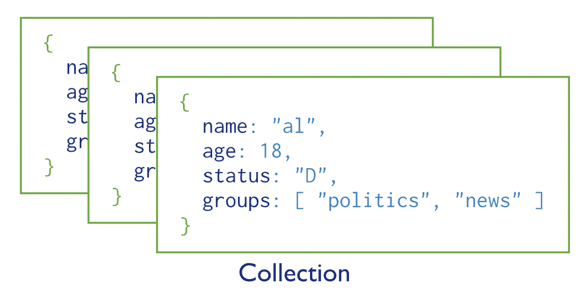
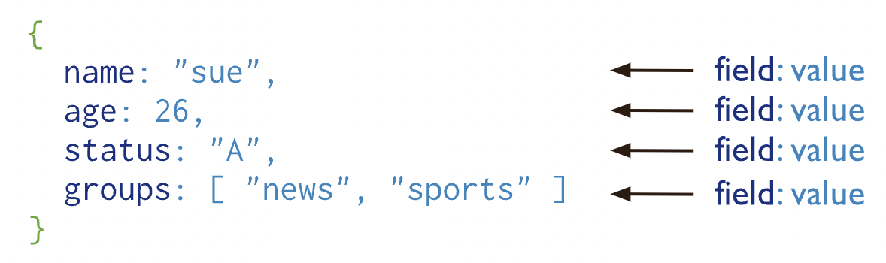
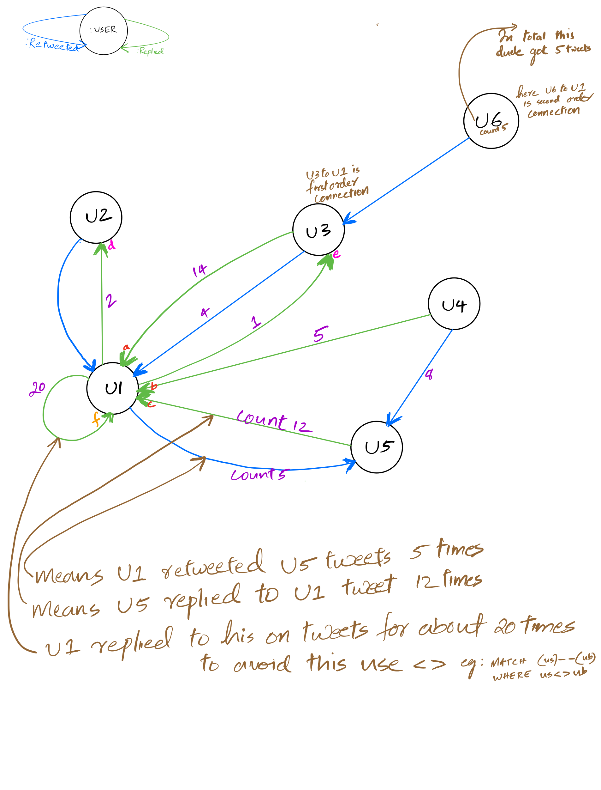

Lecture 7: CQL 2/ MongoDB introduction#
Gittu George, January 30 2024
Attribution: This notebook is developed using some materials provided by neo4j.
Announcements#
Assignment 2 deadline: Upcoming Friday 11:59 PM
Remember: Late submissions won’t be accepted even for partial credits. Make sure
Internet was not working when you tried to upload it at 11:45 PM is not an excuse. You are responsible for uploading it earlier so that situations like this don’t happen.
You are allowed to make multiple submission
Check for the upcoming deadlines with assignments/worksheets - We won’t be able to provide you an extension.
Please start early.
No one attended yesterday’s tutorial.:( Please watch the recording, it can be very helpful for assignments and in understanding the Twitter schema for a graph database. Details here https://piazza.com/class/lr5fd7ctzalz7/post/51
Please make sure you follow the mechanics correctly.
Read regrade request policy very carefully before submitting. Address to Daniel and cc me too. TAs are grading Assignment 1, I will release it as soon as they are done.
There won’t be mongoDB tutorial. But we will have all OHs next week, so please make use of it.
Today’s Agenda#
Aggregation in cypher
Controlling the query chain
Controlling results returned
Introduction to NoSQL document database (MongoDB)
Learning objectives#
Using CQL to query the graph database
To make you capable of applying CQL skills to a real world problem (twitter data)
Have an understanding of document database and MongoDB
Check the ticks in this cheat sheet to see all topics we will cover by the end of this lecture. You only need these to finish your assignment.
Aggregation in Cypher#
When you return results as values, Cypher automatically returns the values grouped by a common value.
MATCH (p:Person)-[:REVIEWED]->(m:Movie)
RETURN p.name, m.title
Aggregation in Cypher is different from aggregation in SQL. In Cypher, you need not specify a grouping key. As soon as an aggregation function is used, all non-aggregated result columns become grouping keys. The grouping is implicitly done, based upon the fields in the RETURN clause.
count()
count() is a common way to aggregate your data. You can use count() to perform a
count of nodes
relationships
rows during query processing
MATCH (a:Person)-[:ACTED_IN]->(m:Movie)<-[:DIRECTED]-(d:Person)
RETURN a.name, d.name, count(m)
The query engine processed all nodes and relationships in the pattern so that it could perform a count of all movies for a particular actor/director pair in the graph. Then the results returned grouped the results by the name of the actor and director.
There are many places we can use count; check out this document
More aggregating functions such as avg(),stDev(), min() or max(), sum(). For entire list check in cypher manual.
Controlling the Query Chain#
Intermediate processing using
WITH
MATCH (a:Person)-[:ACTED_IN]->(m:Movie)
RETURN a.name, count(a) AS numMovies
During the execution of a MATCH clause, you can specify that you want some intermediate calculations or values that will be used for further processing of the query. You use the WITH clause to perform intermediate processing that is not possible in a RETURN clause.
Example: Using WITH
MATCH (a:Person)-[:ACTED_IN]->(m:Movie)
WITH a, count(a) AS numMovies
WHERE 1 < numMovies < 4
RETURN a.name, numMovies
In the above example, we start the query processing by retrieving all actors and their movie count. During the query processing, we only want to return actors with 2 or 3 movies. All other actors and the aggregated results are filtered out. Here WITH clause does the counting and collecting, and the intermediate result is used in the subsequent WHERE clause to test.
Subqueries with
WITH
Here is an example where we retrieve all movies reviewed by a person. For a particular movie found, we want the list of directors of the movie, so we do a second query, a subquery as follows:
MATCH (m:Movie)<-[rv:REVIEWED]-(r:Person)
WITH m, rv, r
MATCH (m)<-[:DIRECTED]-(d:Person)
RETURN m.title, rv.rating, r.name, d.name
For the second MATCH clause, we use the found movie nodes, m. The RETURN clause has access to the movie, rating by that reviewer, the name of the reviewer, and the collection of director names for that movie.
Controlling Results Returned#
Now we will focus on controlling how results are processed in the RETURN and WITH clauses.
Dealing with duplicates#
Duplicate results
MATCH (p:Person)-[:DIRECTED | ACTED_IN]->(m:Movie)
WHERE p.name = 'Tom Hanks'
RETURN m.title, m.released
DISTINCT can be used to deal with duplicates.
MATCH (p:Person)-[:DIRECTED | ACTED_IN]->(m:Movie)
WHERE p.name = 'Tom Hanks'
RETURN DISTINCT m.title, m.released
Using DISTINCT in the RETURN clause here means that rows with identical values will not be returned.
Another way to avoid duplicates is by using WITH and DISTINCT together.
MATCH (p:Person)-[:DIRECTED | ACTED_IN]->(m:Movie)
WHERE p.name = 'Tom Hanks'
WITH DISTINCT m
RETURN m.released, m.title
Ordering results#
If you want the results to be sorted, specify the expression to use for the sort using the ORDER BY keyword and whether you want the order to be descending using the DESC keyword. Ascending order is the default.
MATCH (p:Person)-[:DIRECTED | ACTED_IN]->(m:Movie)
WHERE p.name = 'Tom Hanks' OR p.name = 'Keanu Reeves'
RETURN DISTINCT m.title, m.released ORDER BY m.released DESC
Ordering multiple results
MATCH (p:Person)-[:DIRECTED | ACTED_IN]->(m:Movie)
WHERE p.name = 'Tom Hanks' OR p.name = 'Keanu Reeves'
RETURN DISTINCT m.title, m.released ORDER BY m.released DESC , m.title
Limiting the number of results#
Use LIMIT
MATCH (p:Person)-->(m:Movie)
RETURN m.title as title, m.released as year ORDER BY m.released DESC LIMIT 10
MATCH (actor:Person)-[r:ACTED_IN]-(m:Movie)
RETURN actor.name AS actor, COUNT(r) AS movienumber ORDER BY movienumber DESC LIMIT 5;
Limiting the number of intermediate results
Tip
Using ORDER BY and LIMIT together can be helpful in many scenarios, just like how you did it in your SQL assignments.
MATCH (p:Person)-->(m:Movie)
WITH DISTINCT m.title AS title, m.released AS year ORDER BY m.released DESC LIMIT 1
MATCH (pp:Person)-->(mm:Movie)
WHERE mm.title=title
RETURN pp.name,title,year
Important
Expression in WITH must be aliased (use AS). As we discussed before whatever we give in WITH will be available for subquery. And if you are using a property within a node then you must use alias to refer to that in your subquery.
If within WITH you are using entire node or relationship then you don’t want to alias (but it’s okay if you want to use)
MATCH (m:Movie)<-[rv:REVIEWED]-(r:Person)
WITH m, rv, r
MATCH (m)<-[:DIRECTED]-(d:Person)
RETURN m.title, rv.rating, r.name, d.name
MATCH (m:Movie)<-[rv:REVIEWED]-(r:Person)
WITH m AS mov, rv AS movierel, r AS person
MATCH (mov)<-[:DIRECTED]-(d:Person)
RETURN mov.title, movierel.rating, person.name, d.name
Can you ?#
Perform intermediate processing with WITH.
Perform subqueries with WITH.
Count results returned.
Eliminate duplication in results returned.
Order results returned.
Limit the number of results returned.
MongoDB#

MongoDB is a document-based DBMS:
Released in 2009
Written in C++
Open source
Cross platform
Super fast
MongoDB is based on JSON-like documents for data storage. It offers:
Native replication and sharding
Automatic scaling and load balancing
Multi-language support
Powerful query language
Who uses MongoDB#
Google, ebay, Craigslist, Toyota, Forbes, Electronic Arts, Adobe, AstraZeneca, and the list goes on.
(https://www.mongodb.com/who-uses-mongodb)
JSON#
JSON is short for Java Script Object Notation.
JSON documents are simple containers, where a string key is mapped to a value (e.g. a number, string, function, another object).
{
"_id": 1,
"name" : { "first" : "John", "last" : "Backus" },
"contribs" : [ "Fortran", "ALGOL", "Backus-Naur Form", "FP" ],
"awards" : [
{
"award" : "W.W. McDowell Award",
"year" : 1967,
"by" : "IEEE Computer Society"
}, {
"award" : "Draper Prize",
"year" : 1993,
"by" : "National Academy of Engineering"
}
]
}
JSON documents can be found everywhere:
APIs
Configuration files
Log messages
Database storage
BSON#
Although the JSON document may look great for storing data as is, but it has a number of drawbacks:
JSON is text, and text parsing is very slow
JSON’s format is readable but not space-efficient (a database concern)
JSON’s support of various data types is not great
It’s because of the above reasons that MongoDB stores data in BSON (Binary JSON) files, which address all of the above issues but still look like JSON when we work with them in MongoDB.
For an overview, see here.
Collections#
In MongoDB, a database consists of one or more collections, each containing multiple documents.
{kind=link}
Documents#
{kind=link}
Each document contains field-value pairs
The field name
_idacts as the primary key of each document, and should therefore be unique in a collectionMongoDB automatically assigns an
_idvalue if not specified at the time of inserting a documentMongoDB creates an index on the
_idfield by defaultThe maximum size of a BSON document is about 16MB
MongoDB Atlas is a fully managed cloud database service, that automates the whole process of configuring, administration and maintaining of a database server for you. Basically, you specify what kind of server (CPU, RAM, number of nodes, location, etc.) you need, and MongoDB Atlas sets it up for you. They’ve partnered with Amazon Web Services, Google Cloud Platform, Microsoft Azure to host their database instances.
The majority of these services are paid, however, they also offer a basic database service that is free and is best suited for learning and exploring. We’ll use the free MongoDB Atlas clusters for our course. You can set up your own cluster here.
See also
Here are the details on how to setup your MongoDB atlas and setup your mongosh.
Class activity#
Note
Check worksheet 7 in canvas for detailed instructions on activity and submission instructions.
Practice CQL using twitter data
Worksheet 7#
Question: I’m interested to know whether there is a relationship between the rate at which people reply, and are replied to.
In any graph questions keep two rules in mind. Can you…
Break the questions into various parts
the rate at which people reply
and are replied to
Can you draw the logic with a pen and paper? (Maybe for a complex scenario or for identifying some interesting questions)
Did you draw ?

Here are some of my thoughts on formulating a CQL query.
What are the elements that I need to RETURN?
sentreply (and are replied to) - eg: pink ones in drawing - e and d
gotreply (the rate at which people reply) - eg: red ones in drawing - a, b and c.
Where can I get these elements? (Check CALL apoc.meta.data())
What pattern do I need to give in my MATCH?
I need to be careful with the direction.
Do I need to provide multiple MATCH clauses/patterns?
Maybe multiple MATCH for subquerying
Is any subquery needed?
Maybe YES, one for the first breakdown (gotreply)
and the other for the second breakdown I listed.(sentreply)
Do I have to do any aggregation?
YES, sum(), so what property needs to be inside this?
Okay, I need to do aggregation, but what should be the grouping key ?